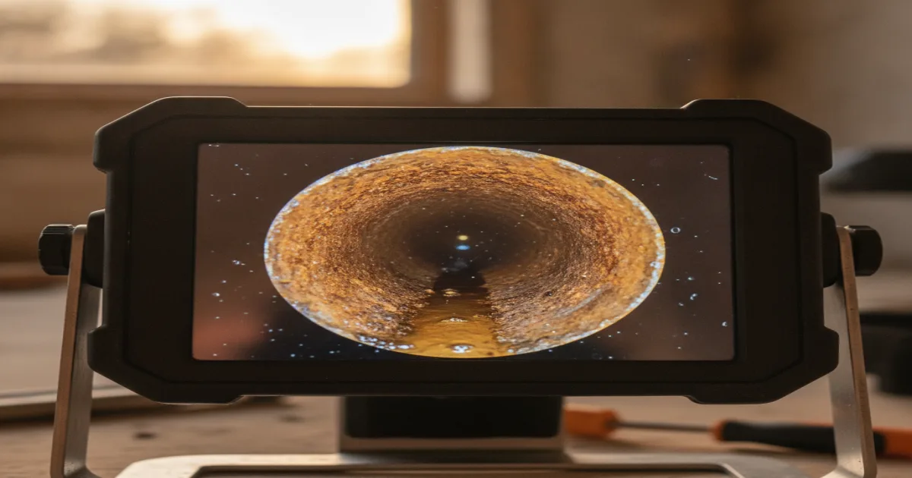
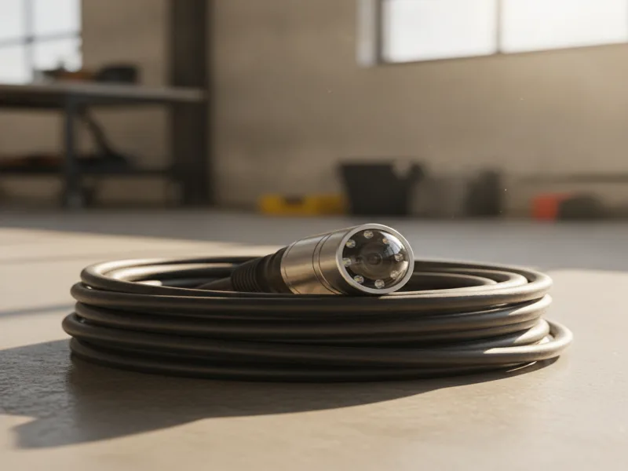

Sewer & Drain Camera Inspection in Armonk, NY
A small waterproof camera lets us see exactly what's happening inside your pipes — blockages, cracks, root intrusion, and more — before we recommend any work.
- Licensed & Insured
- Same-Day Service Available
- Upfront Pricing
- 15+ Years of Experience

What a camera inspection is, and why it helps
A sewer and drain camera inspection uses a flexible, waterproof camera fed directly into your pipe. It sends back a live video feed, so instead of guessing what's wrong based on symptoms alone, we can see the actual blockage, crack, root intrusion, or misaligned joint causing the problem.
This matters because a lot of drainage problems look similar from the outside. A recurring clog could be everyday buildup, or it could be a structural issue in the pipe. A camera inspection removes the guesswork before you spend money on a repair that may not address the real cause.
How the inspection process works
We feed the camera into the line through an existing cleanout or fixture, and guide it through the pipe while watching the live feed. As we go, we note the location and type of any issue we find, using a built-in locator to mark exactly where it sits relative to the surface, which is especially useful if a repair ends up needing to target one specific section.

Once we've reviewed the full length of the line, we'll show you what we found and explain it in plain terms. If the footage points to a blockage rather than damage, we can usually move straight into clearing the blockage the camera finds the same visit.
Local factors we look for in Westchester homes
Westchester County's active real estate market means camera inspections come up often for reasons beyond an active problem. Homebuyers and sellers frequently want to know a sewer line's real condition before closing, especially for older homes in Armonk and nearby towns that may still have original clay or cast-iron laterals.
In these inspections, we're specifically watching for the same issues that tend to show up in this area's older housing stock: cracked or separated clay pipe joints, root intrusion from mature trees, and sections that have sagged or shifted with the ground over time.
What affects the cost
The length of the line being inspected is the biggest factor, since longer runs take more time to camera fully. Access also matters — a line with a nearby cleanout is quicker to inspect than one that requires removing a fixture first. If locating an issue's exact position is part of the job, that adds a bit of time as well, but it's often worth it if a repair is likely to follow.
When to call a professional
Call us if you're dealing with a recurring or unexplained drain problem, if you're buying or selling a home with an older sewer line, or if you simply want a clear picture of your plumbing's condition before it becomes an emergency. If the footage shows structural damage, we'll help you schedule the repair with confidence, knowing exactly what's wrong and where.
For contractor-selection guidance on choosing a qualified plumber for camera work or any related repair, resources like Angi outline good questions to ask before hiring — we're always happy to answer them directly.
If the issue turns out to be heavy grease or scale buildup rather than damage, a hydro jetting session is often the next step to fully clear the line.
A camera inspection is just one part of keeping your drains and sewer line in good shape. See additional drain and sewer services for everything else we offer, from routine cleaning to full sewer line repair.
Frequently asked questions
Is a camera inspection necessary before every sewer repair?
We recommend it in almost every case. It confirms exactly what's wrong before you commit to a repair, which usually saves money in the long run.
Can a camera inspection tell me about a home before I buy it?
Yes. Many buyers request a sewer camera inspection before closing, especially for older homes, since sewer line condition isn't something a standard home inspection typically covers in detail.
How long does a camera inspection take?
Most residential inspections take 30 minutes to an hour, depending on the length of the line and how easy it is to access.
Will you show me the footage from my inspection?
Yes. We walk you through what we found on the live feed and explain what it means for your plumbing.
Can a camera inspection find tree root intrusion?
Yes, it's one of the clearest ways to confirm root intrusion and see exactly where roots have entered the pipe.
Does a camera inspection damage the pipe?
No. The camera and cable are designed to move through pipe without causing any damage, whether the line is in good condition or already compromised.